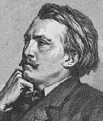

Gustave Doré (1832-1883)Um dos maiores ilustradores de todos os tempos, o francês Gustave Doré era também pintor e escultor, mas suas pinturas e esculturas não tiveram o mesmo sucesso que suas ilustrações de obras famosas como A Divina Comédia de Dante, Gargantua de Rabelais, Contos de Balzac, Dom Quixote de Cervantes, Paraíso Perdido de Milton, O Corvo de Edgar Allan Poe e a Bíblia. Ilustrou mais de 120 obras. Doré trabalhava de forma intensa e veloz. Geralmente esboçava os desenhos diretamente na madeira e contava com vários auxiliares para terminar de gravá-las. Chegou a empregar aproximadamente 40 gravadores competentes para trabalhar nas suas ilustrações, entre eles Pisan, Pannemaker e Jonnard se destacam (e co-assinam) grande parte de suas obras. Em 1857, Doré começou a trabalhar nas ilustrações do Inferno de Dante. Ele não sabia italiano e provavelmente utilizou a tradução em prosa de Pier Angelo Fiorentino que posteriormente foi republicada com suas ilustrações. Não encontrando editor disposto a publicar sua obra, Doré publicou as ilustrações e o texto por conta própria em 1861. Foi um grande sucesso. Doré sucedia a Botticelli como o maior ilustrador de Dante, acreditava o público. Em 1868 terminou as ilustrações do Purgatório e do Paraíso e publicou uma obra com as ilustrações de toda a Divina Comédia. Doré teve uma vida próspera e pode usufruir do seu sucesso. Na sua biografia, Dan Malan fala dos seus romances com as mulhares mais famosas do século 19 como a atriz Sarah Bernhardt e a cantora de opera Adelina Patti. Doré morreu em janeiro de 1883, deixando incompletas suas ilustrações para uma edição de Shakespeare. Fontes: [Encarta 97], [Larousse 98], [Doré 95], WebMuseum: Doré, Gustave, Carol Gerten's Fine Art: Doré. Todas as ilustrações de Doré para a Divina Comédia podem ser encontradas em [Elf].
|